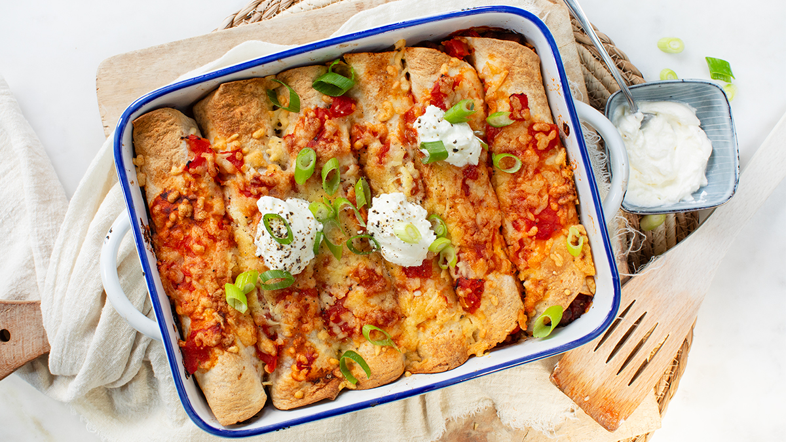

enchilladas-met-kip

Ingredienten
- 200 gr kipfilet ( vega )
- 1 ui
- 2 tenen knoflook
- 2 paprika's
- 400 gr tomatenblokjes (Heinz)
- 1 eetlepel tomatenpuree
- 120 gr maïs
- 6 medium wraps
- 2 eetlepels olijfolie
- 1 snuf peper en zout
- 1 theelepel komijn
- 2 theelepels paprikapoeder
- 1 theelepel chilipoeder
- 75 gr geraspte kaas
- 2 bosui
- zure room
Bereiding
- Verwarm de oven voor op 180 graden.
-
Snijd de kipfilet (vega) in kleine blokjes en bak deze in een aparte pan
met een eetlepel olijfolie tot ze net gaar en goudbruin zijn. Haal de
kipfilet uit de pan en zet apart.
-
Verwarm de resterende eetlepel olijfolie in een pan en bak de ui en
knoflook glazig. Voeg de komijn, paprikapoeder en chilipoeder toe en
roer goed door.
-
Snijd de paprika’s in blokjes en voeg ze toe. Roer de tomatenpuree er
door en breng op smaak met peper en zout.
-
Voeg de gebakken kip toe en de bosui samen met de uitgelekte mais. Roer
de helft van de tomatenblokjes erdoor en laat het mengsel een paar
minuten sudderen.
-
Leg een wrap op een vlakke ondergrond en verdeel een portie van de
vulling in het midden. Rol de wrap strak op en leg deze in een
ovenschaal met de naad naar beneden. Herhaal dit met de overige wraps.
Leg ze in een ingevette ovenschaal.
-
Giet de rest van de tomatenblokjes over de wraps in de ovenschaal en
bestrooi met de geraspte kaas.
-
Zet de ovenschaal in de oven en bak de enchilladas ongeveer 20 minuten,
totdat de kaas gesmolten en goudbruin is.
-
Haal de enchilladas met kip uit de oven en maak af met een lepel zure
room en wat extra bosui.
-
Tips: deze wraps zijn heerlijk met wat rijst er bij. Bewaar eventuele
restjes van de enchilladas in een afgesloten bakje in de koelkast
maximaal 2 dagen. Houd ongeveer 1,5 tot 2 enchilladas per persoon aan
met rijst er bij als avondmaal.